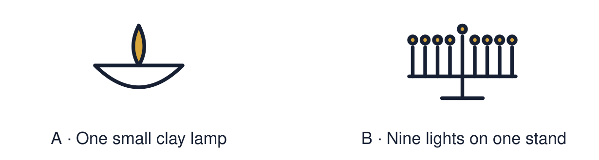

Arrival choices
Previous lesson reminder:

Start with 1 and 2. Try 3 and 4 when ready. Reading and exact scribing are available.
1 What can the light of a diya stand for?
Support: Use the reminder strip or talk it through with an adult.
2 Which meaning fits compare?
Support: Choose: To look for what is the same and what is different OR A Jewish festival of lights that lasts eight nights.
3 Name one thing Diwali and Hanukkah both use.
Support: Use the model evidence anchor A, B or read one relevant card together.
4 How many nights does Hanukkah last?
Support: Give a reason when ready.
Stretch: use a precise example or explain which detail supports your answer.
Evidence cards
Read, point or listen. Keep the source label with any detail you use.
A Diwali
Many Hindus, Sikhs and Jains celebrate Diwali. Families light diya lamps. For many the light stands for good overcoming evil.
Source: Authored summary; see Hindu American Foundation, Diwali
Limit: Families celebrate in different ways.
B Hanukkah
Hanukkah is a Jewish festival. It lasts eight nights. Each night one more light is lit on the hanukkiah. It recalls the Temple being rededicated and oil that lasted eight days.
Source: Authored summary; see Chabad, What is Hanukkah
Limit: Jewish families celebrate in different ways.
C Both
Both festivals use light. Both bring families together. Both are linked to stories that matter to the people who celebrate.
Source: Authored classroom resource
Limit: Sharing a feature does not make two festivals the same.
D Comparing fairly
We compare to understand, not to decide which is better. Start with one fact for each celebration.
Source: Authored classroom rules
Limit: A comparison of two festivals leaves out many others.
Shared investigation
1. Sort each feature: Diwali, Hanukkah or both.
2. Say one similarity without calling the festivals the same.
Work with a partner or adult, or use your own table. One person suggests; the other checks the evidence. Swap after one turn. Passing is allowed.
Move or match the cards
| Cards to use |
|---|
| Light is used |
| Eight nights |
| Diya lamps |
Possible labels: Both / Diwali / Hanukkah
Support: Show two choices. Read one short instruction. Point, match or say a word, then add a reason when ready.
Further challenge: Explain how the same symbol, light, carries a different story in each festival.
Supported independent task
Complete this route only. Identify one similarity between how light is used in two celebrations.
1. Sort three picture cards: Diwali, Hanukkah or both.
2. Point to the card that fits both.
3. Say or finish: Both ___.
Support: Show two choices. Read one short instruction. Point, match or say a word, then add a reason when ready. Complete the organiser one space at a time. Both ___. Diwali ___. Hanukkah ___.
An adult may read or scribe your exact response. They should not choose the answer.
Standard independent task
Complete this route only. Identify one similarity between how light is used in two celebrations.
1. Sort the feature cards into Diwali, Hanukkah or both.
2. Choose one similarity.
3. Finish one sentence: Both ___.
Support: Both ___. Diwali ___. Hanukkah ___.
Check the required evidence and revise one detail.
Stretch independent task
Complete this route only. Identify one similarity between how light is used in two celebrations.
1. Complete the comparison with one similarity and one difference.
2. Write a “Both ___” sentence.
3. Explain how the story behind the light differs.
Support: Choose the evidence independently. Use the frame only if it helps.
Explain how the same symbol, light, carries a different story in each festival.
Exit ticket
Choose a response mode. You may give your answers privately to an adult.
Name one thing Diwali and Hanukkah both use.
How many nights does Hanukkah last?
Support: Both ___. Diwali ___. Hanukkah ___.
Further challenge: Explain how the same symbol, light, carries a different story in each festival.